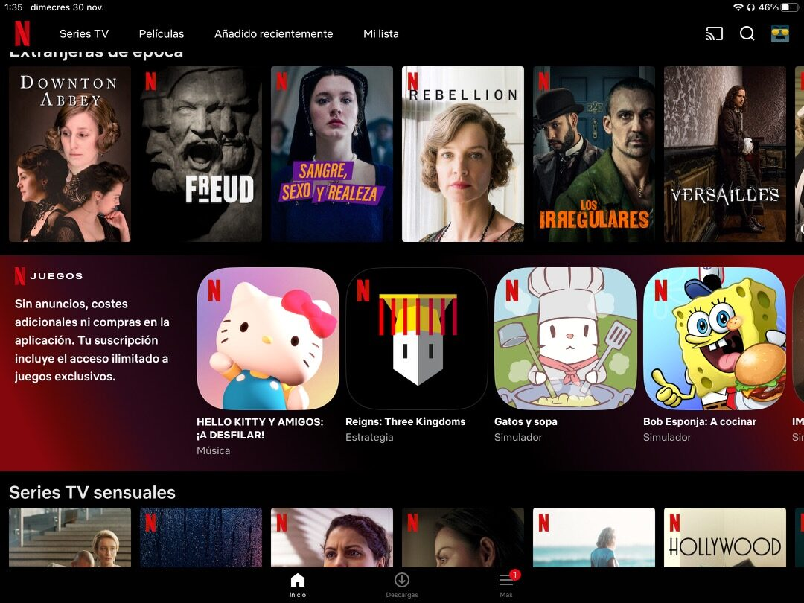
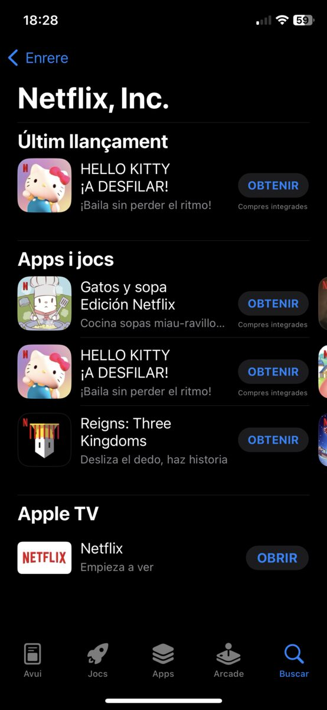
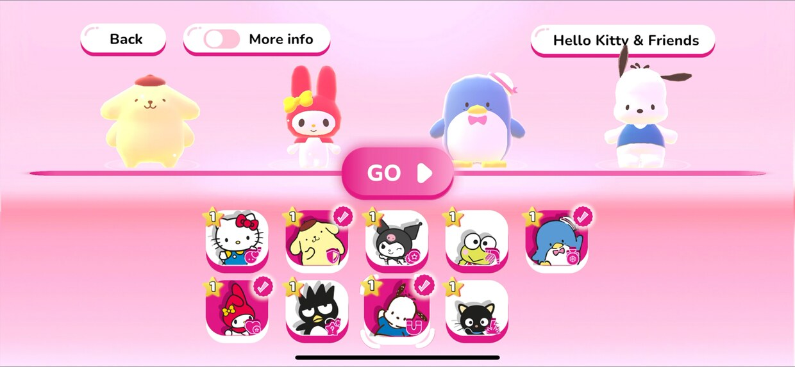
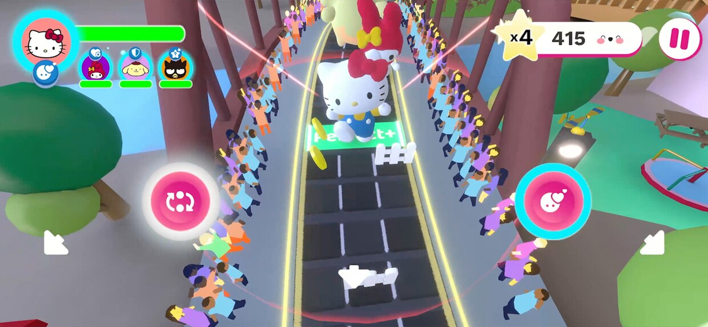
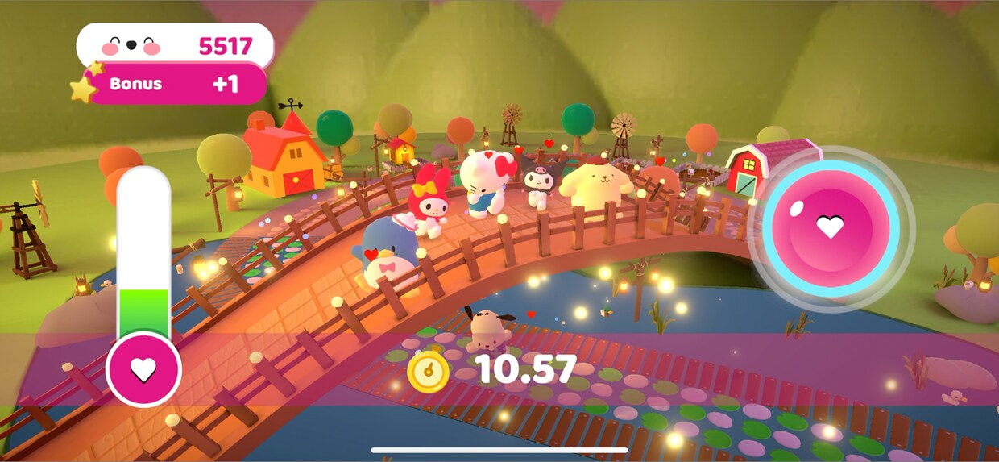
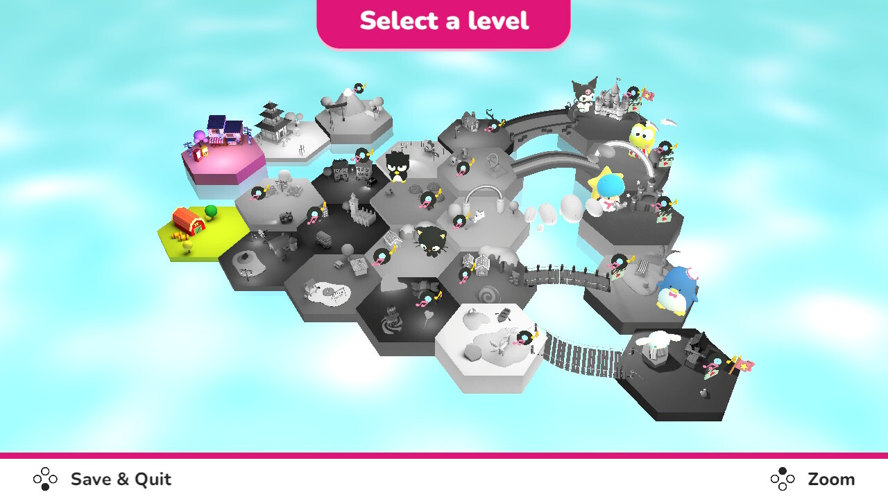
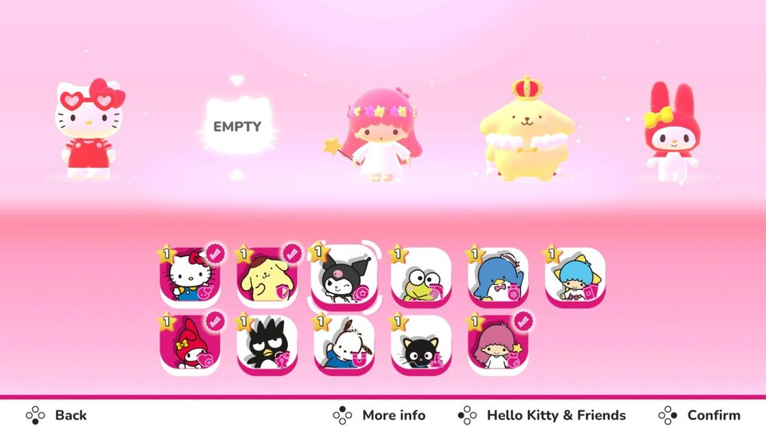
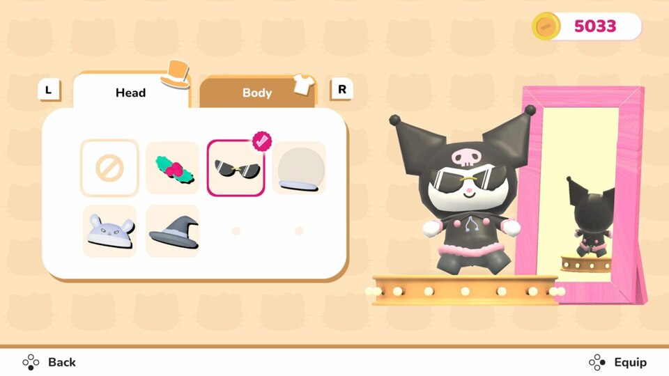
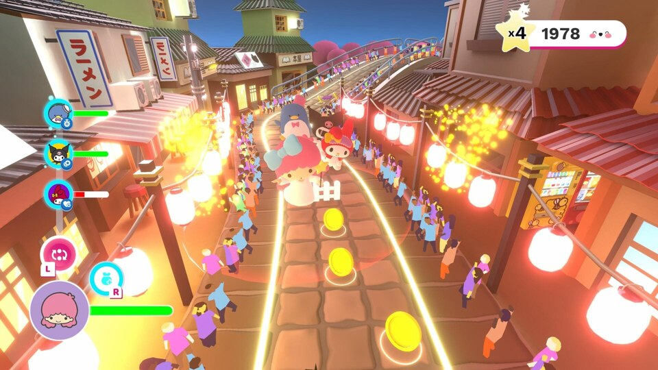

Hello Kitty and Friends: Happiness Parade
A music and rhythm game starring Sanrio's characters: an endless-runner with roguelike elements where Hello Kitty and her friends parade to the beat of the music, dodging Kuromi's traps. Built in Unity. It first released as a Netflix Games exclusive (iOS/Android) in 2022 and then as a dedicated Nintendo Switch version (2023), with new content and controls.
Quick facts
| Field | Value |
|---|---|
| Role | Lead developer (Unity, iOS/Android/Switch) |
| Studio | Dabadu Games |
| Publisher | Netflix (mobile) · Rogue Games (Switch) |
| License | Sanrio |
| Platforms | iOS, Android (Netflix Games), Nintendo Switch |
| Releases | Nov 30, 2022 (mobile) · Oct 26, 2023 (Switch) |
| Genre | Music / rhythm (endless runner with roguelike elements) |
| Price | Subscription (Netflix, mobile) · paid on Switch ($19.99) |
| Languages | 33 (mobile) · 15 (Switch) |
| Store (Switch) | Nintendo eShop |
Mobile (Netflix Games, 2022)
A Netflix Games exclusive for subscribers, released on iOS and Android on November 30, 2022.
Highlights
- Over 780,000 players.
- Netflix Games exclusive (iOS/Android).
- Several free content updates after launch, adding new characters, outfits and accessories.
- Pocket Gamer included it among its games of the week.
Images
Netflix Games exclusive (November 2022)

App Store launch (November 2022)

Mobile screenshots (App Store)



Press
Pocket Gamer — December 1, 2022 — "5 new mobile games to try this week"
"Rounding out the Netflix releases is Hello Kitty Happiness Parade, which lets players bop their heads to the beat while helping Hello Kitty parade around town to everyone's delight. Players can make friends with new allies and learn abilities to boost the festivities, all while avoiding Kuromi's traps at the same time."
Pocket Gamer — December 6, 2022 — launch
"The latest arrival to Netflix's mobile game storefront, Hello Kitty Happiness Parade, has officially launched. This endless runner in the same vein as games like Temple Run or Subway Surfers sees you hit a Sanrio-themed world as you navigate numerous challenging stages dodging obstacles and vibing to an absolute banger of a soundtrack."
Nintendo Switch (2023)
A dedicated Nintendo Switch version, released on October 26, 2023 with new content and controls.
Highlights
- 23 levels with five different endings, plus 3 new levels and 20 new tracks exclusive to Switch.
- 11 playable Sanrio characters, with customisable outfits (hats, sunglasses) and character cards that level up their abilities.
- Motion controls with the Joy-Con (in addition to buttons).
- Soundtrack with over 40 pop hits.
Feature list from the official game listing (Gematsu).
Images
Nintendo Switch (October 2023)




Press
NoobFeed — October 20, 2023 — 76 (7.6/10)
"Plainly put, Hello Kitty and Friends Happiness Parade is just a straight-up good time."
ScreenRant — November 13, 2023 — "'A Fun Experience For Any Age'"
"The music for Hello Kitty and Friends Happiness Parade is incredibly catchy and gets players up on their feet while the cheerful artistry and bright colors truly do fulfill Hello Kitty's mission to spread joy. There are 23 different levels with over 40 foot-tapping songs…"
Nintendojo — October 26, 2023 — 83% (B-)
"By the time I was done playing, I put down my controller and thought, 'That was actually much better than I expected.' … While the game has a lot of room for improvement, it's also the best Sanrio game I've played so far across a number of different platforms over the years."
Pure Nintendo — 2023
"…succeeds at being an upbeat, breezy, and bouncy rhythm game that's enjoyable enough to spend some time with."
Digitally Downloaded — 2023
"Hello Kitty and Friends Happiness Parade is actually a pretty decent thing, worth spending some time with, for anyone that enjoys cute things and uncomplicated charm."
GameCrate — 2023 — 6/10
"Hello Kitty and Friends: Happiness Parade is an adorable title that brings a lot of the beloved Sanrio characters to the rhythm game genre… Overall, the art and music felt very faithful to the brand."
VideoChums — October 30, 2023 — 8/10 (★★★★☆)
"I've had HELLO KITTY AND FRIENDS HAPPINESS PARADE installed on my Switch for over 6 months now and have been itching to talk about it. Now that it's finally out, let me just say that this is one of my favourite rhythm games ever."
Way Too Many Games — 2023 — 8.0/10
"In theory, Hello Kitty and Friends Happiness Parade should have been crap… Walking to a beat sounds excruciatingly boring, but somehow the developers at Dabadu Games managed to craft a pretty interesting gameplay loop… It's actually stupidly fun as a 'pick up and play' experience."
Christ Centered Gamer — October 26, 2023
"Originally released on mobile devices through Netflix, Hello Kitty and Friends: Happiness Parade is a surprisingly tough music game with roguelike elements."
Ladies Gamers — October 26, 2023 — verdict: "I Like it a Lot"
"Hello Kitty and Friends Happiness Parade is a great game for young and old… The K-pop song list added hugely to the fun, and the colourful and cute world was much to my liking."
Notes
- The Netflix version was removed from the service on March 16, 2026.